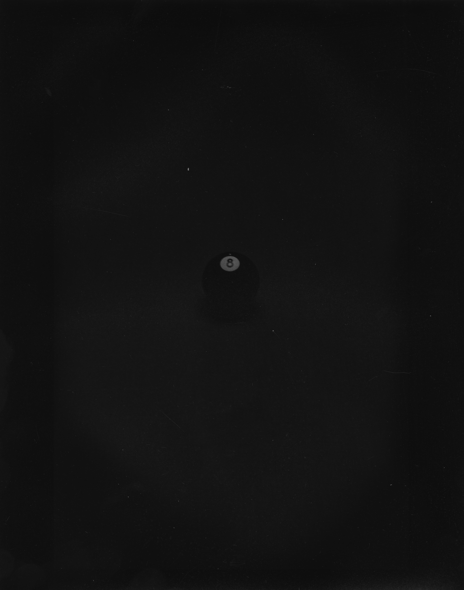
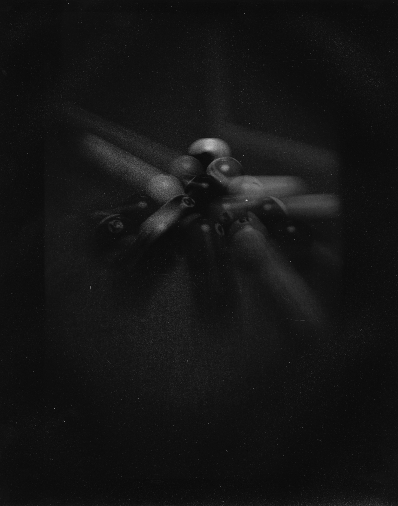
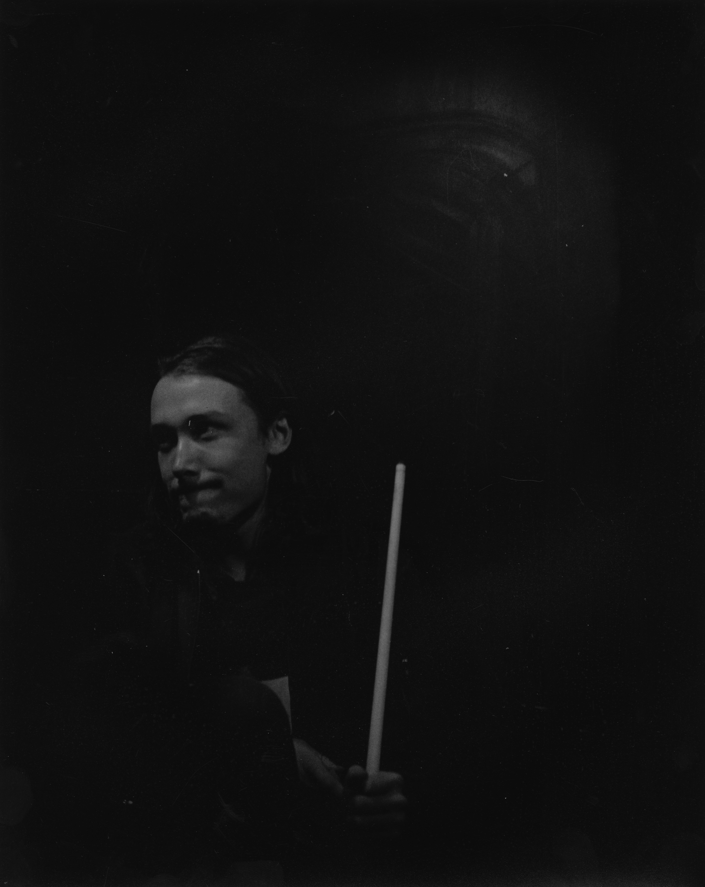
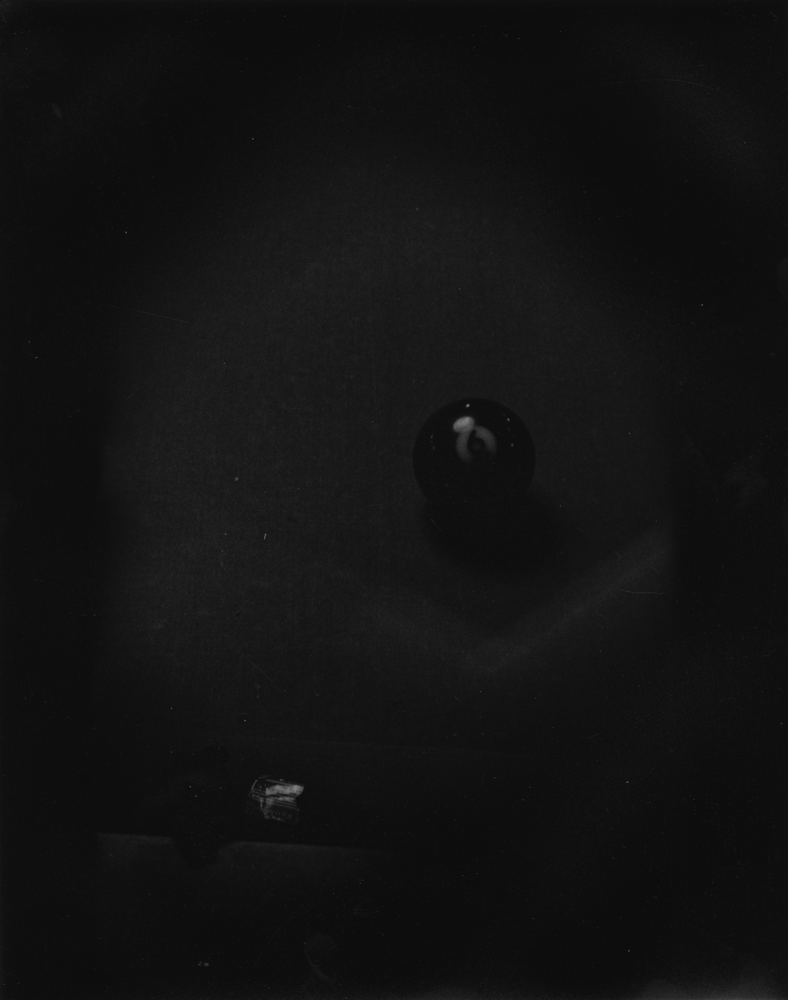
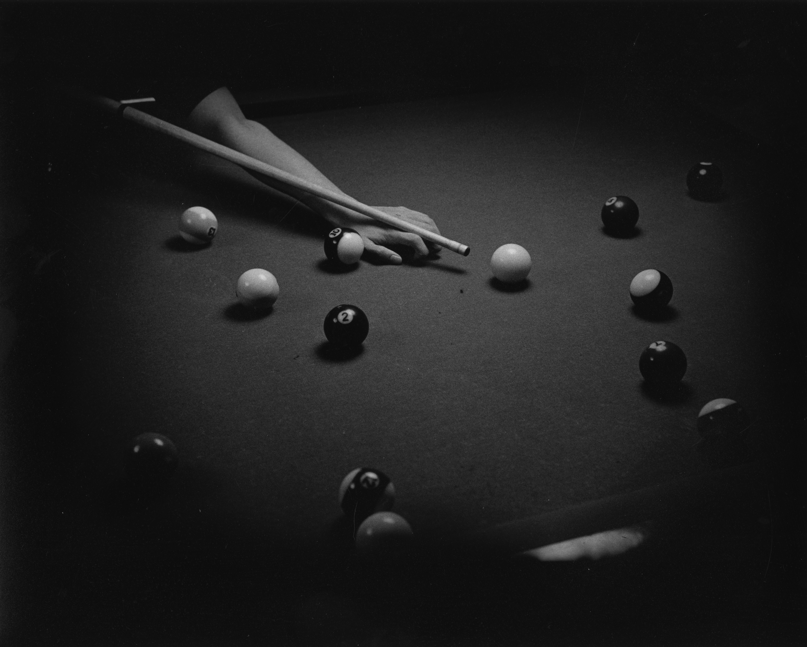
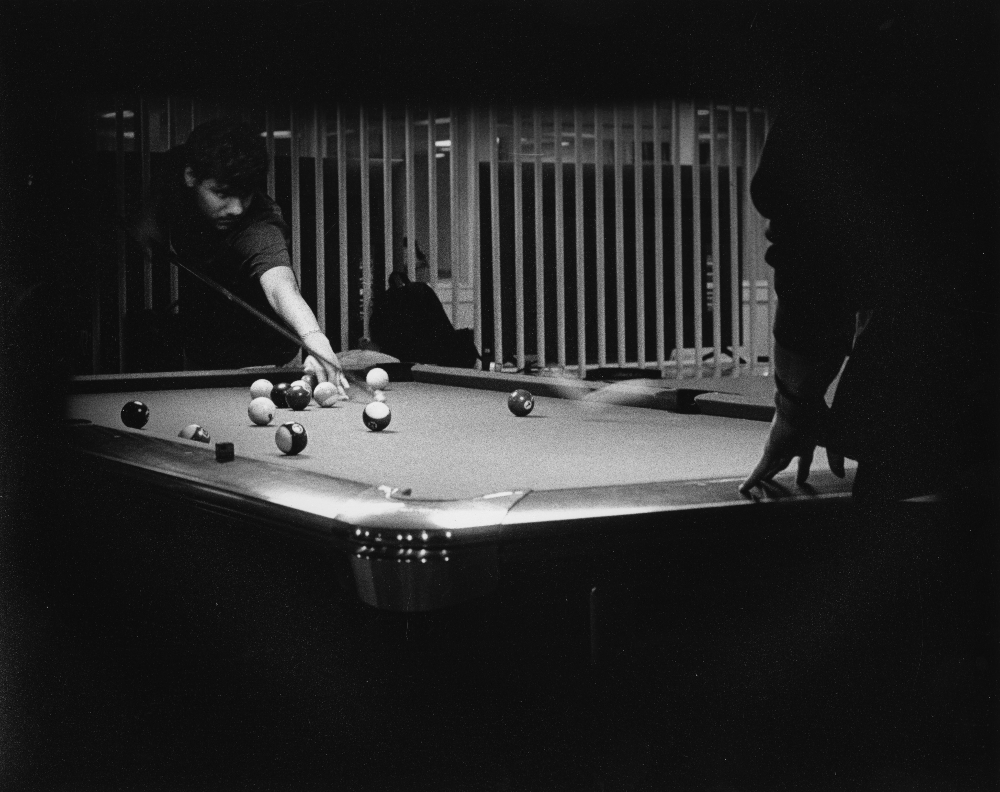

Behind the 8-Ball
Gallery







List of works
- 8-Ball Hall, Silver Gelatin Print, 2025, 8 × 10 in
- End, Silver Gelatin Print, 2025, 8 × 10 in
- Break, Silver Gelatin Print, 2025, 8 × 10 in
- The Billiard Player, Silver Gelatin Print, 2025, 8 × 10 in
- Scratch, Silver Gelatin Print, 2025, 8 × 10 in
- Sagittarius the Archer, Silver Gelatin Print, 2025, 8 × 10 in
- Jump Shot, Silver Gelatin Print, 2025, 8 × 10 in
Info
Captured with a Nikon F2 SLR on Ilford HP5 Plus 400 film. The series consists of 8 × 10 in silver gelatin prints on Ilford paper, featuring distinct black borders.